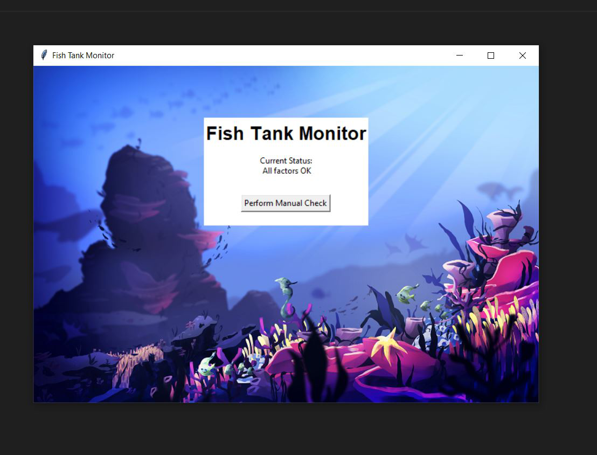
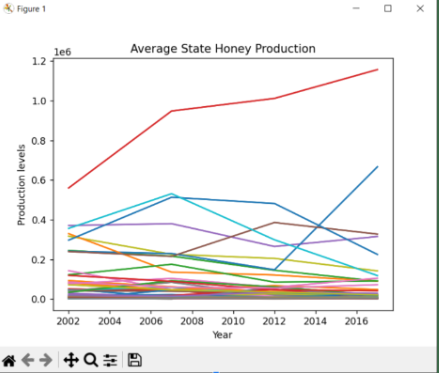

Home
Portfolio
About Me
This is my Portfolio Page!

For our project we created a flower maker. It gives the user freedom in creating the different colors of their flower and then eventually being able to draw whatever they want in the stem color.

For our project we created a soccer game. We learned how to use different score functions as well as using abstraction in order to make our code simpler and less complex.
For our project we created Bucketeer. In this game you collect powerups and try to attack the birds before the birds attack you.

For this project we downloaded and analyzed evidence as well as modified code to see what errors occured within the fish tank system. We made multiple modifications in different files and created test cases to make sure that we fixed them properly. At the end we were able to improve the code and fix the program.

We used our data and found that the rover is in the Rocky Moutains. After separating into four differnet sections of data, we analyzed the graphs of this data to find that most of it lines up with the elements present in the environment of the Rocky Mountains.

We gathered and analyzed data about bee population trends and created graphs to understand growths and declines. Our graphs show trends in large, mid, and small honey production rates across the country.

My group and I analyzed the patterns of leaves falling in an Autumn Simulation. We were able to experiment with different sliders such as temperature, rain factor, wind factor, and sun intensity, to change the rate at which the leaves fall.